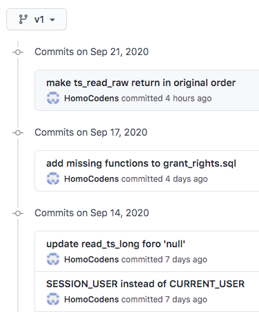
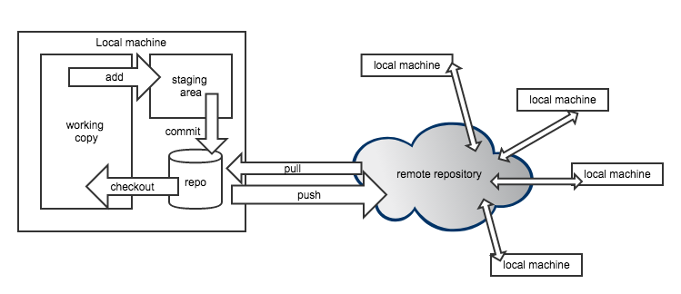
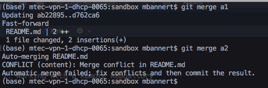
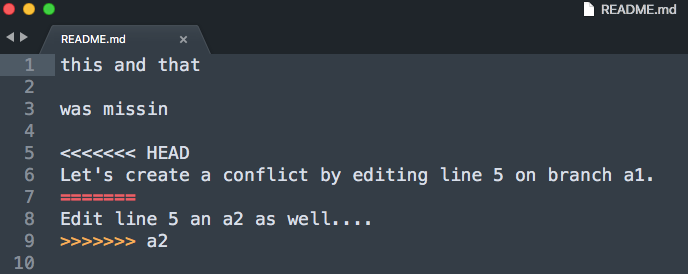
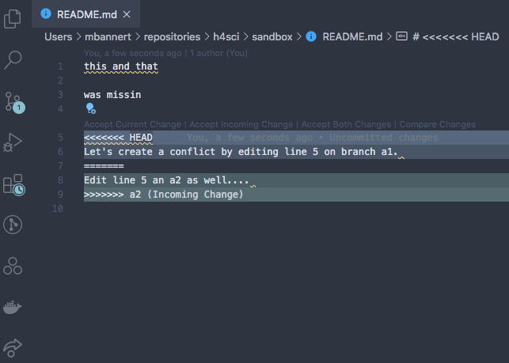
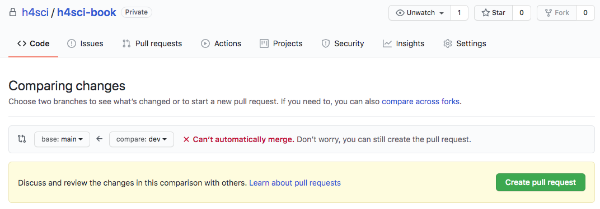

| Command | Effect |
|---|---|
| git init | put current directory and all its subdirs under version control. |
| git status | shows status |
| git add file_name.py | adds file to tracked files |
| git commit -m 'meaningful msg' | creates a new version/commit out of all staged files |
| git log | show log of all commit messages on a branch |
| git checkout some-commit-id | go to commit, but in detached HEAD state |
| git checkout main-branch-name | leave temporary state, go back to last commit |
5 Git Version Control
As stated before, version control may be the single most important thing to take away from DevOps Carpentry if you have not used it before. In this chapter about the way developers work and collaborate, I will stick to version control with git. The stack discussion of the previous chapter features a few more version control systems, but given git’s dominant position, we will stick solely to git in this introduction to version control.
5.1 What is Git Version Control?
Git is a decentralized version control system. It manages different versions of your source code (and other text files) in a simple but efficient manner that has become the industry standard: The git programm itself is a small console programm that creates and manages a hidden folder inside the folder you put under version control (you know those folders with a leading dot in their foldername, like .myfolder). This folder keeps track of all differences between the current version and other versions before the current one.

Meaningful commit messages help to make sense of a project’s history.
The key to appreciate the value of git is to appreciate the value of semantic versions. Git is not Dropbox nor Google Drive. It does not sync automagically (even if some Git GUI Tools suggest so). Because these GUIs tools1 may be convenient but do not really help to improve your understanding of the workflow, we will use the git console throughout this book. As opposed to the sync approaches mentioned above, a version control system allows to summarize a contribution across files and folders based on what this contribution is about. Assume you got a cool pointer from an econometrics professor at a conference and you incorporated her advice in your work. That advice is likely to affect different parts of your work: your text and your code. As opposed to syncing each of these files based on the time you saved them, version control creates a version when you decide to bundle things together and to commit the change. That version could be identified easily by its commit message ‘incorporated advice from Anna (discussion at XYZ Conf 2020)’.
5.2 Why Use Version Control in Research?
A version control based workflow is a path to your goals that rather consists of semantically relevant steps instead of semantically meaningless chunks based on the time you saved them.
In other more blatant, applied words: naming files like final_version_your_name.R or final_final_correction_collaboratorX_20200114.R is like naming your WiFi dont_park_the_car_in_the_frontyard or be_quiet_at_night to communicate with your neighbors. Information is supposed to be sent in a message, not a file name. With version control it is immediately clear what the most current version is - no matter the file name. No room for interpretation. No need to start guessing about the delta between the current version and another version.
Also, you can easily try out different scenarios on different branches and merge them back together if you need to. Version control is a well established industry standard in software development. And it is relatively easy to adopt. With datasets growing in size and complexity, it is only natural to improve management of the code that processes these data.
Academia has probably been the only place that would allow you to dive into hacking at somewhat complex problems for several years w/o ever taking notice of version control. As a social scientist who rather collaborates in small groups and writes moderate amount of code, have you ever thought about how to collaborate with 100+ persons in a big software project? Or to manage ten thousands of lines of code and beyond? Version control is an important reason why these things work. And it’s been around for decades. But enough about the rant…
5.3 How Does Git Work ?
This introduction tries narrow things down to the commands that you’ll need if want to use git in similar fashion to what you learn from this book. If you are looking for more comprehensive, general guides, three major git platforms, namely Atlassian’s Bitbucket, GitHub and Gitlab offer comprehensive introductions as well as advanced articles or videos to learn git online.
The first important implication of decentralized version control is that all versions are stored on the local machines of every collaborator, not just on a remote server (this is also a nice, natural backup of your work). So let’s consider a single local machine first.
Locally, a git repository consists of a checkout which is also called current working copy soon. This is the status of the file that your file explorer or your editor will see when you use them to open a file. To checkout a different version, one needs to call a commit by its unique commit hash and checkout that particular version.
If you want to add new files to version control or bundle changes to some existing files into a new commit, add these files to the staging area, so they get committed next time a commit process is triggered. Finally committing all these staged changes under another commit id a new version is created.
5.4 Moving Around
So let’s actually do it. Here’s a three stage walk through of git commands that should have you covered in most use cases a researcher will face. Note that git has some pretty good error message that guess what could have gone wrong. Make sure to read them carefully. Even if you can’t make sense of them, your online search will be a lot more efficient when you include these messages.
Stage 1: Working Locally
Stage 2: Working with a Remote Repository
Though git can be tremendously useful even without collaborators, the real fun starts when working together. The first step en route to get others involved is to add a remote repository.
| Command | Effect |
|---|---|
| git clone | creates a new repo based on a remote one |
| git pull | get all changes from a linked remote repo |
| git push | deploy all commit changes to the remote repo |
| git fetch | fetch branches that were created on remote |
| git remote -v | show remote repo URL |
| git remote set-url origin https://some-url.com | set URL to remote repo |
Stage 3: Branches
Branches are derivatives from the main branch that allow to work on different feature at the same time without stepping on someone elses feet. Through branch repositories can actively maintain different states.
| Command | Effect |
|---|---|
| git checkout -b branchname | create new branch named branchname |
| git branch | show locally available branches |
| git checkout branchname | switch to branch named branchname |
| git merge branchname | merge branch named branchname into current branch |
Fixing Merge Conflicts
In most cases git is quite clever and can figure out which is the desired state of a file when putting two versions of it together. When git’s recursive strategy is possible, git it wil merge versions automatically. When the same lines were affected in different versions, git cannot tell which line should be kept. Sometimes you would even want to keep both changes.
But even in such scenario fixing the conflict is easy. Git will tell you that your last command caused a merge conflict and which files are conflicted. Open these files and see all parts of the file that are in question.

Ouch! We created a conflict by editing the same line in the same file on different branches and trying to but these branches back together.
Luckily git marks the exact spot where the conflict happens. Good text editors / IDEs ship with cool colors to highlight all our options.

go for the current status or take what’s coming in from the a2 branch?
Some of the fancier editors even have git conflict resolve plugins that let you walk through all conflict points.

In VS Code you can even click the option.
At the and of the day, all do the same, i.e., remove the unwanted part including all the marker gibberish. After you have done so, save, commit and push (if you are working with a remote repo) . Don’t forget to make sure you kinked out ALL conflicts.
5.5 Collaboration Workflow
The broad acceptance of git as a framework for collaboration has certainly played an important role in git’s establishment as an industry standard.
5.5.1 Feature Branches
This section discusses real world collaboration workflows of modern open source software developers. Hence the prerequisites are a bit different in order to benefit the most from this section. Make sure you are past the mere ability to describe and explain git basics, make sure you are able to create and handle your own repositories.
If you had only a handful of close collaborators so far, you may be fine with staying on the main branch and trying not to step on each others feet. This is reasonable because, git aside, it is rarely efficient to work asynchronously on exact the same lines of code anyway. Nevertheless, there is a reason why feature-branch-based workflows became very popular among developers: Imagine you collaborate in async fashion, maybe with someone in another timezone. Or with a colleague who works on your project, but in a totally different month during the year. Or, most obviously, with someone you have never met. Forks and feature-branch-based workflows is the way a lot of modern open source projects tackle the above situations.
Forks are just a way to contribute via feature branches even in case you do not have write access to a repository. But let’s just have look at the basic feature branch case in which you are part of the team first with full access to the repository. Assume there is already some work done, some version of the project is already up on a some remote GitHub account. You join as a collaborator and are allowed to push changes now. It’s certainly not a good idea to simply add things without review to a project’s production. Like if you got access to modify the institute’s website and you made your first changes and all your changes go straight to production. Like this:
It used to be subtle and light gray. I swear!
Bet everybody on the team took notice of the new team member by then. In a feature branch workflow you would start from the latest production version. Remember, git is decentralized and you have all versions of your team’s project on your local machine. Create a new branch named indicative of the feature you are looking to work on.
git checkout -b colorwaysYou are automatically being switched to the freshly created branch. Do your thing now. It could be just a single commit, or several commits by different persons. Once you are done, i.e., commited all changes, add your branch to the remote repository by pushing.
git push -u origin colorwaysThis will add a your branch called colorways to the remote repository. If you are on any major git platform with your project, it will come with a decent web GUI. Such a GUI is the most straight forward way to do the next step: get your Pull Request (PR) out.

Github pull request dialog: Select the pull request, choose which branch you merge into which target branch.
As you can see, git will check whether it is possible to merge automatically w/o interaction. Even if that is not possible, you can still issue the pull request. When you create the request you can also assign reviewers, but you could also do so at a later stage.
Even after a PR was issued you can continue to add commits to the branch about to be merged. As long as you do not merge the branch through the Pull Request, commits are added to the branch. In other words your existing PR gets updated. This is a very natural way to account for reviewer comments.
Pro-Tipp: Use commit messages like ‘added join to SQL query, closes #3’. The key word ‘closes’ or ‘fixes’, will automatically close issues referred to when merged into the main branch.
Once the merge is done, all your changes are in the main branch and you and everyone else can pull the main branch that now contains your new feature. Yay!
5.5.2 Pull Requests from Forks
Now let’s assume you are using an open source software created by someone else. At some point you miss a feature that you feel is not to hard to implement. After googling and reading up a bit, you realize others would like to have these feature, too but the orginal authors did not find the time to implement it yet. Hence you get to work yourself. Luckily the project is open source and up on GitHub, so you can simply get you version of, i.e., fork the project to your own GitHub account (just click the fork button and follow the instructions) .
Now that you have your own version of the software with all the access rights to modify it, you can implement your feature and push it to your own remote git repository. Because you forked the repository your remote git platform will still remmeber where you got it from and allows you to issue a pull request to original author. The original authors can now review the pull request, see the changes and decide whether they are fine with the feature and its implementation.
There may very well be some back and forth in the message board before the pull requests gets merged. But usually these discussion are very context aware and sooner or later you will get your first pull request approved and merged. In that case congratulations - you have turned yourself into a team-oriented open source collaborator!
5.5.3 Rebase vs. Merge
Powerful systems often provide more than one way to achieve your goals. In the case of git, putting together two branches of work – a very vital task, is exactly such a case: we can either merge or rebase branches.
While merge keeps the history intact, rebase is a history altering command. Though most people are happy with the more straight forward merge approach, a bit of context is certainly helpful.
Imagine the merge approach as a branch that goes away from the trunk at some point and then grows alongside the trunk in parallel. In case both histories becomes out of sync because someone else adds to the main branch while you keep adding to feature branch you can either merge oder rebase to put the two together.
Sitting on a checkout of the feature branch, a merge of the main branch would simply create an additional merge commit sequentially after the last commit of the feature branch. This merge commit contains the changes of both branches, no matter if they were automatically merged using the standard recursive strategy or through resolving a merge conflict.
As opposed to that, rebase would move all changes to main to before the feature branch started then sequentially add all commits of the feature branch. That way the remains linear, history looks cleaner and does not contain those artificial merge commits.
So when should we merge and when should rebase? There is no clear rule to that other than to not use rebase on exposed branches such as main, because you would have a different main branch than other developers than. Rebase can ruin your collaborative workflow, yet it helps to clean up. In my opinion, merging feature branches is just fine for most people and teams. So unless you have too many people working on too many different features at once and are in danger of not being able to move through your history, simply go with the merge approach. The following Atlassian tutorial offers more insights an illustrations to deepen your understanding of the matter.
GitHub Desktop, Atlassian’s Source Tree and Tortoise are some of the most popular choices if you are not a console person.↩︎